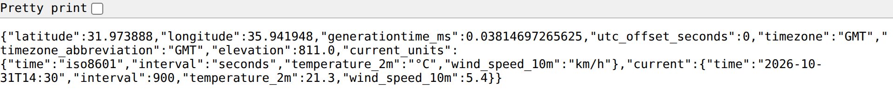
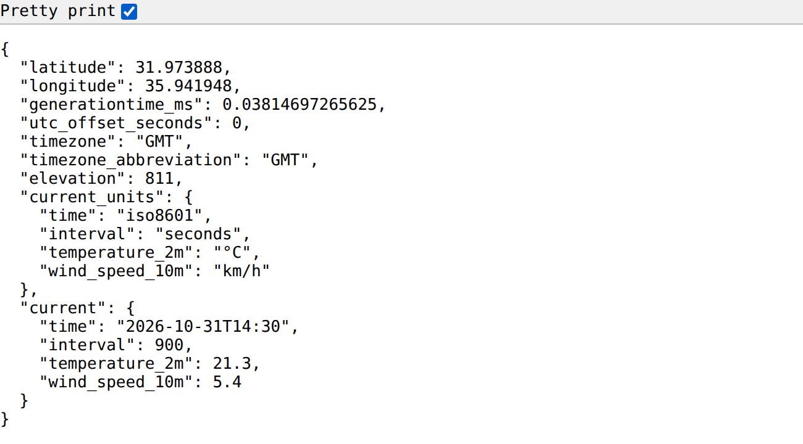
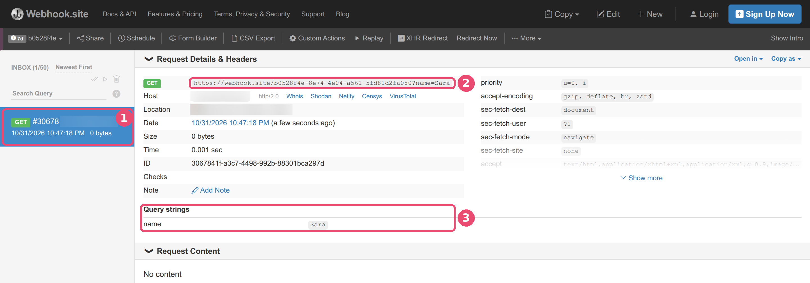
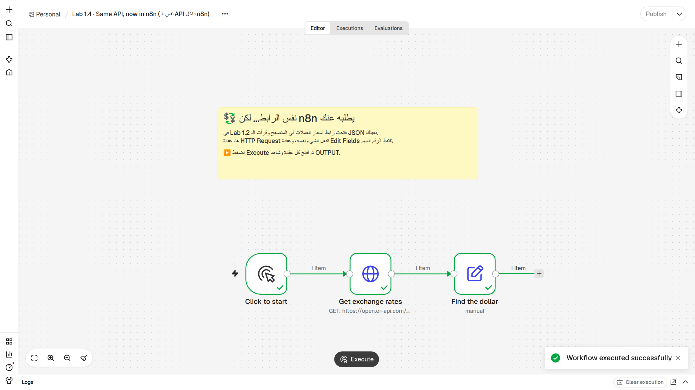
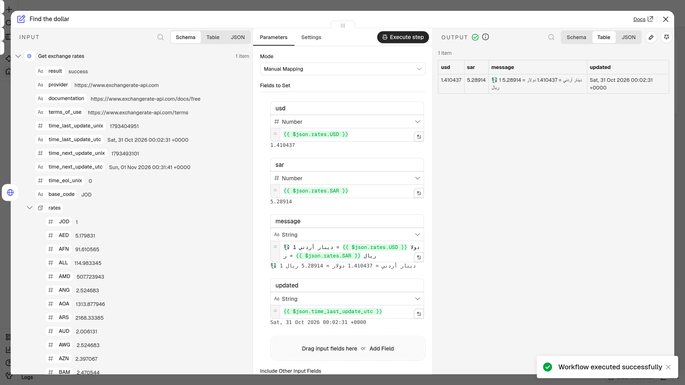

🧪 Lab 1 · فكّر كمصمّم أتمتة — Think Like an Automator
الحصة 1 · n8n من الصفر — ثلاثة تمارين بدون n8n (متصفح وورقة فقط): نصمّم أتمتة على الورق، ثم نكلّم API من المتصفح، ثم نضغط جرس Webhook حقيقي. Class 1 · n8n from zero — three exercises, browser and paper only: design an automation on paper, talk to an API from your browser, then ring a real webhook doorbell. ⭐ إضافي / Bonus: تمرين 1.4 داخل n8n عندما يصبح عندك حساب — نفس رابط الـ API، لكن n8n يطلبه عنك.
| التمرين / Lab | ماذا تحتاج / You need | الوقت / Time |
|---|---|---|
| 1.1 · صمّم أتمتتك الأولى — Design your first automation | ورقة وقلم (أو الـ handout ص 3) | ~12 دقيقة |
| 1.2 · كلّم API من متصفحك — Talk to an API from your browser | متصفح | ~13 دقيقة |
| 1.3 · اضغط جرس الباب بنفسك — Ring a real webhook doorbell | متصفح (+ هاتفك، اختياري) | ~10 دقائق |
⭐ 1.4 · إضافي: نفس الـ API داخل n8n — Bonus: the same API in n8n (api-in-n8n.json) |
حساب n8n Cloud (بعد إنشائه) | ~10 دقائق · في البيت أو أول الحصة 2 |
🎯 الهدف / Goal
بنهاية هذا التمرين ستكون قادراً على:
- تحويل مهمة متكررة من حياتك إلى تصميم أتمتة: المُشغِّل Trigger ← الخطوات Steps ← النتيجة Result، وحساب الدقائق التي توفّرها أسبوعياً.
- إرسال طلب GET («أرني…») إلى API حقيقي من شريط المتصفح، وقراءة الرد بصيغة JSON (الاستمارة المعبّأة): تجد قيمة، وتعرف هل هي نص أم رقم أم قائمة.
- صنع جرس باب Webhook خاص بك على الإنترنت، ورنّه، ورؤية الرنّة تصل فوراً — ثم التمييز بين Webhook (الجرس) و Polling (تفقّد الباب كل 5 دقائق).
By the end you can turn a repeated task into Trigger → Steps → Result, call a free API from your browser and read its JSON, and ring a real webhook URL and watch it arrive instantly.
✅ قبل أن تبدأ / Before you start
- ☐ لابتوب (الأفضل) أو هاتف، متصل بالإنترنت.
- ☐ متصفح Firefox (الأفضل: يرتّب الـ JSON وحده) أو Chrome.
- ☐ الـ handout المطبوع (ص 3 و 4)، أو ورقة وقلم.
- ☐ لا تحتاج أي حساب ولا أي مفتاح API (بطاقة عضوية). كل المواقع اليوم مجانية ومفتوحة.
- ☐ (اختياري لـ 1.3) هاتفك، لترنّ الجرس من جهاز آخر.
💡 كلمات ستراها: API = النادل 🤵 (ينقل طلبك للمطبخ ويرجع بالرد) · JSON = استمارة معبّأة 📝 · key = اسم الحقل · value = ما كُتب فيه · URL = الرابط في شريط العنوان · Webhook = جرس الباب 🔔 · Polling = تفقّد الباب كل 5 دقائق 🚶.
✏️ Lab 1.1 · صمّم أتمتتك الأولى — Design your first automation
كل أتمتة مثل وصفة طبخ لها 3 أجزاء: ⚡ المُشغِّل Trigger (متى نبدأ؟) ← ⚙️ الخطوات Steps (ماذا نفعل، بالترتيب؟) ← 🎯 النتيجة Result (ماذا نحصل في النهاية؟). المُشغِّل نوعان: حدث («عندما يصل…» = جرس الباب 🔔) أو وقت («كل يوم الساعة…» = المنبّه ⏰).
📋 مثالان محلولان / Two worked examples (الأرقام توضيحية فقط):
| ⚡ المُشغِّل Trigger | ⚙️ الخطوات Steps | 🎯 النتيجة Result | 📱 التطبيقات Apps | ⏱ دقائق/أسبوع Minutes saved |
|---|---|---|---|---|
| مثال 1 · متجر صغير: عندما يرسل زبون طلباً عبر نموذج الطلب 🔔 | 1) انسخ الاسم والهاتف والطلب إلى جدول 2) أرسل رسالة تأكيد للزبون 3) نبّه مندوب التوصيل | طلب مسجّل، زبون مطمئن، مندوب يعرف | Google Forms، Google Sheets، Telegram | 5 د × 8 طلبات × 6 أيام = 240 د (4 ساعات) |
| مثال 2 · تقرير يومي: كل يوم الساعة 8:00 صباحاً ⏰ | 1) اجلب مبيعات الأمس من الجدول 2) احسب المجموع 3) أرسله بالإيميل للمدير | تقرير يصل المدير قبل الدوام | Google Sheets، Gmail | 20 د × 5 أيام = 100 د |
هكذا يبدو المثال 1 لو رسمناه كما في n8n، من اليسار إلى اليمين (أسماء المربعات بالإنجليزية كما ستراها في n8n):
[New order] ──▶ [Add row to sheet] ──▶ [Confirm to customer] ──▶ [Tell the driver]
المربع الأول هو المُشغِّل ⚡، والثلاثة بعده هي الخطوات ⚙️ بالترتيب.
✍️ دورك / Your turn — هذه ورقتك (نفس الجدول مطبوع في الـ handout ص 3):
| ⚡ المُشغِّل Trigger | ⚙️ الخطوات Steps | 🎯 النتيجة Result | 📱 التطبيقات Apps | ⏱ دقائق/أسبوع Minutes saved |
|---|---|---|---|---|
| مهمتي 1: | ||||
| مهمتي 2: |
🪜 الخطوات / Steps
- في هامش الورقة اكتب 3 مهام تكرّرها كل أسبوع بنفس الطريقة (في العمل، الدراسة، أو البيت). 👀 قائمة من 3 أسطر، مثل «نسخ الطلبات إلى Excel» أو «الرد على نفس السؤال في واتساب».
- ضع دائرة حول مهمتين منها: الأكثر تكراراً أو الأكثر إزعاجاً. 👀 مهمتان عليهما دائرة.
- في سطر مهمتي 1، عمود ⚡ المُشغِّل: اكتب متى تبدأ المهمة. ابدأ الجملة بـ «عندما…» (حدث) أو «كل…» (وقت). 👀 جملة مثل «عندما يصل إيميل فيه فاتورة» أو «كل أحد الساعة 9:00».
- في عمود ⚙️ الخطوات: اكتب الخطوات مرقّمة، وكل خطوة = فعل واحد (انسخ، أرسل، احفظ، احسب). 👀 2 إلى 4 أسطر قصيرة مرقّمة: 1) … 2) … 3) …
- في عمود 🎯 النتيجة: اكتب ماذا تحصل في النهاية. 👀 جملة واحدة، مثل «كل الفواتير في جدول واحد».
- في عمود 📱 التطبيقات: اكتب أسماء التطبيقات المستخدمة (Gmail؟ Google Sheets؟ WhatsApp؟ Telegram؟ Excel؟). 👀 اسم إلى 3 أسماء.
- في عمود ⏱ دقائق/أسبوع: احسب دقائق المهمة × مرات في اليوم × أيام في الأسبوع. 👀 رقم بالدقائق، مثل 10 × 3 × 5 = 150 د.
- كرّر الخطوات 3 إلى 7 لسطر مهمتي 2. 👀 سطران كاملان، كل سطر فيه 5 خانات مملوءة.
🎉 النتيجة المتوقعة / Expected result
ورقة فيها مهمتان مصمّمتان بالكامل. افحص كل سطر بثلاثة أسئلة:
| السؤال / Check | ✔️ |
|---|---|
| هل يبدأ المُشغِّل بـ «عندما…» أو «كل…»؟ | ☐ |
| هل كل خطوة فعل واحد بالترتيب؟ | ☐ |
| هل عندك رقم بالدقائق في آخر السطر؟ | ☐ |
📌 احتفظ بالورقة! سنختار منها أمثلة نبنيها في n8n لاحقاً في الدورة.
🌤️ Lab 1.2 · كلّم API من متصفحك — Talk to an API from your browser
عندما تكتب رابطاً في المتصفح وتضغط Enter، فأنت الزبون (Client) ترسل طلب GET («أرني…») إلى النادل (API). النادل يذهب إلى المطبخ (Server) ويرجع لك بـ استمارة معبّأة (JSON). القيم حيّة وتتغيّر (الطقس مثلاً)، فاكتب ما تراه أنت. الأمثلة أدناه حقيقية من يوم كتابة المختبر.
👓 اجعل الـ JSON سهل القراءة / Make JSON readable
- في Firefox: يرتّب الـ JSON ويلوّنه وحده. إذا رأيته سطراً واحداً، اضغط تبويب JSON أو زر Pretty Print في أعلى الصفحة.
- في Chrome: يعرض الرد سطراً طويلاً واحداً. ضع علامة ✔️ في خانة Pretty print أعلى يسار الصفحة.
| بدون Pretty print (سطر طويل) | مع Pretty print (مرتّب) |
|---|---|
 |
 |
🪜 الخطوات / Steps
أ) طقس عمّان الآن — open-meteo 🌤️ (الجميع يبدأ هنا)
- افتح تبويباً جديداً في المتصفح (
Ctrl+T، وعلى Mac:Cmd+T). 👀 تبويب فارغ، وشريط العنوان في الأعلى. - انسخ الرابط الذي في المربع التالي كاملاً، والصقه في شريط العنوان، ثم اضغط
Enter:
https://api.open-meteo.com/v1/forecast?latitude=31.95&longitude=35.93¤t=temperature_2m,wind_speed_10m
👀 نص يبدأ بـ {"latitude":31.97… (في Firefox تراه مرتّباً ملوّناً مباشرة).
- في Chrome فقط: ضع علامة ✔️ في خانة Pretty print أعلى يسار الصفحة.
👀 كل سطر فيه: اسم حقل بين
" "ثم:ثم قيمة — مثل صورة «مع Pretty print» أعلاه. - ابحث عن الكلمة
"current"(اضغطCtrl+Fواكتبcurrent). 👀 استمارة صغيرة داخل الاستمارة الكبيرة، تشبه هذا (مختصر — ستجد أيضاً مفاتيح مثلinterval، تجاهلها):
{
"timezone": "GMT",
"current_units": { "temperature_2m": "°C", "wind_speed_10m": "km/h" },
"current": {
"time": "2026-10-31T14:15",
"temperature_2m": 21.7,
"wind_speed_10m": 4.3
}
}
- 🔎 جد القيمة / Find the value — أجب على الورقة:
- كم درجة الحرارة الآن؟ ………… أي key يحملها؟ ………… داخل أي استمارة؟ …………
- ما وحدة القياس؟ (ابحث في
current_units) ………… - هل الحرارة نص أم رقم؟ كيف عرفت؟ …………
ب) روابط بديلة / Backup URLs (إذا لم يفتح رابط الطقس، أو انتهيت مبكراً)
- افتح مستخدماً تجريبياً من JSONPlaceholder (بيانات وهمية مخصّصة للتدريب) — انسخ هذا الرابط إلى شريط العنوان واضغط
Enter:
https://jsonplaceholder.typicode.com/users/1
👀 استمارة مرتّبة جاهزة لشخص اسمه "Leanne Graham"، وفيها استمارتان صغيرتان: address (العنوان) و company (الشركة).
🔎 ما قيمة email؟ ………… · ما قيمة city، وداخل أي استمارة هي؟ ………… · ما اسم الشركة (company ← name)؟ …………
- افتح سعر صرف الدينار من ExchangeRate-API بنفس الطريقة:
https://open.er-api.com/v6/latest/JOD
👀 في البداية "result": "success" و "base_code": "JOD"، ثم قائمة طويلة اسمها rates فيها أكثر من 150 عملة.
🔎 كم دولاراً أمريكياً يساوي دينار واحد؟ (Ctrl+F ← USD) ………… · وكم ريالاً سعودياً (SAR)؟ ………… · متى آخر تحديث (time_last_update_utc)؟ …………
ج) إضافي اختياري / Optional extras: agify و nationalize
⚠️ حدّ صغير جداً: هذان الموقعان يسمحان بحوالي 10 طلبات في اليوم لكل شبكة إنترنت (مشتركة بين الموقعين). في قاعة فيها الجميع على نفس الـ Wi-Fi ستنتهي في دقيقة، وسيظهر
{"error":"Request limit reached"}— هذا ليس خطأك (رمز 429: «طلبت كثيراً اليوم»). جرّبهما من بيانات الهاتف (4G/5G) أو في البيت.
- افتح تخمين العمر من الاسم:
https://api.agify.io/?name=sara
👀 سطر واحد: {"count":263640,"name":"sara","age":38}
🔎 ما العمر المتوقّع، وأي key يحمله؟ ………… · ماذا تظن أن count يعني؟ …………
- افتح تخمين البلد من الاسم:
https://api.nationalize.io/?name=omar
👀 قائمة اسمها country بين [ ]، كل عنصر فيها استمارة صغيرة (مختصر):
{
"count": 913606,
"name": "omar",
"country": [
{ "country_id": "EG", "probability": 0.127113 },
{ "country_id": "MA", "probability": 0.126303 },
{ "country_id": "MX", "probability": 0.064575 },
{ "country_id": "DZ", "probability": 0.059505 },
{ "country_id": "JO", "probability": 0.040565 }
]
}
🔎 كم دولة في القائمة؟ ………… · هل يظهر الأردن JO، وما احتماله؟ ………… · هل country نص أم رقم أم قائمة؟ ………… (تلميح: 0.127 تعني تقريباً 12.7٪.)
🎉 النتيجة المتوقعة / Expected result
أجبت على أسئلة أ (الطقس)، وعلى رابط واحد على الأقل من ب أو ج. مثال لما وجدناه يوم كتابة المختبر:
| الرابط / URL | أين القيمة؟ / Where | مثال / Example |
|---|---|---|
| الطقس (open-meteo) | current ← temperature_2m |
21.7 (والوحدة °C في current_units) |
| مستخدم تجريبي (JSONPlaceholder) | address ← city |
"Gwenborough" |
| سعر الصرف (ExchangeRate-API) | rates ← USD |
1.41 تقريباً |
⚠️ الأرقام عندك ستكون مختلفة — إنها بيانات حيّة! هذا طبيعي وليس خطأ.
🔔 Lab 1.3 · اضغط جرس الباب بنفسك — Ring a real webhook doorbell
في 1.2 كنت أنت من يسأل (تفتح الرابط = تطلب من النادل). الآن العكس: سنصنع جرس باب خاص بك على الإنترنت، ونرنّه، ونرى الرنّة تصل فوراً بدون أن نسأل. نستخدم موقع webhook.site: مجاني، وبدون حساب.
| في البيت 🏠 | على webhook.site 🌐 |
|---|---|
| بيتك، تجلس فيه وتنتظر | صفحة webhook.site مفتوحة في التبويب الأول |
| عنوان جرس بابك | الرابط الخاص بك Your unique URL |
| زائر يضغط الجرس، ومعه ورقة عليها اسمه | تفتح الرابط في تبويب آخر وفي آخره ?name=Sara |
| «دينغ دونغ!» 🔔 ترى من على الباب | سطر جديد يظهر في INBOX، واسم الزائر تحت Query strings |
🪜 الخطوات / Steps
- في تبويب جديد افتح https://webhook.site
👀 صفحة عنوانها Your unique URL، وتحته رابط طويل يبدأ بـ
https://webhook.site/ثم حروف وأرقام (مثلhttps://webhook.site/b0528f4e-8e74-…). على اليسار عمود INBOX (0/50) ومكتوب فيه Waiting for the first request.🔔 هذا الرابط هو جرس بابك. لا أحد غيرك عنده نفس الرابط. تجاهل زر Sign Up، لا نحتاج حساباً.
- انسخ الرابط: اضغط أيقونة النسخ 📋 بجانبه، أو ظلّله كله بالفأرة واضغط
Ctrl+C. 👀 الرابط الآن محفوظ (في الحافظة) وجاهز للّصق. - افتح تبويباً ثانياً (
Ctrl+T) والصق الرابط في شريط العنوان (Ctrl+V). لا تضغط Enter بعد. 👀 الرابط الطويل في شريط العنوان. - أضف في آخر الرابط مباشرة (بدون مسافة):
?name=ثم اسمك بحروف إنجليزية. 👀 العنوان صار مثل:https://webhook.site/b0528f4e-…-5fd81d2fa080?name=Sara - اضغط
Enter. 👀 صفحة شبه فارغة فيها جملة واحدة:This URL has no default content configured.هذا رد الجرس: «وصلت الرنّة» (رمز 200 ✅). - ارجع إلى التبويب الأول (webhook.site). لا تضغط تحديث.
👀 خلال ثانية أو اثنتين ظهر على اليسار سطر أزرق جديد يبدأ بـ GET ورقم مثل
#30678، والعدّاد صار INBOX (1/50). الجرس رنّ وحده! - انظر إلى القسم Query strings في وسط الصفحة.
👀 كلمة
nameوبجانبها اسمك. هذه «الورقة» التي جاء بها الزائر مع الرنّة.

① الرنّة الجديدة في INBOX · ② أعلى التفاصيل: GET والرابط الكامل مع ?name=Sara · ③ Query strings: name = Sara. (في الصورة أخفينا خانتي Host و Location: عنوان الجهاز على الإنترنت IP والمدينة التقريبية.)
- رنّ مرة ثانية: في التبويب الثاني غيّر الاسم في آخر الرابط (مثلاً
Sara←Omar) واضغطEnter. 👀 في webhook.site صار عندك سطران، و INBOX (2/50). اضغط على أي سطر لترى تفاصيله. - (اختياري) رنّ من هاتفك: أرسل لنفسك الرابط مع
?name=Phoneفي آخره (مثلاً في واتساب أو تيليجرام)، ثم اضغطه من الهاتف. 👀 سطر جديد يظهر على اللابتوب فوراً — من جهاز آخر تماماً!
💡 هذا بالضبط هو الـ Webhook. تطبيق آخر (متجر، بوابة دفع، نموذج) «يرنّ» رابطك لحظة حدوث شيء، ومعه معلومات (مثل اسم الزبون). أنت لم تفتح الباب كل 5 دقائق لتسأل «هل من جديد؟» (هذا هو Polling) — جلست مرتاحاً، والرنّة وصلت وحدها. في الحصة 3 سيكون الجرس رابطاً من n8n بدل webhook.site، وكل رنّة ستشغّل سير عمل.
🔐 رابط webhook.site للتجربة فقط: أي شخص يعرفه يستطيع أن يرنّه ويرى ما وصله. لا ترسل إليه أي كلمة سر أو معلومة خاصة. الرابط المجاني يعمل 7 أيام (علامة
7dفي الأعلى) ويحفظ حتى 50 رنّة.
- ✅ فحص سريع / Quick check: جرس أم تفقّد؟ لكل موقف اسأل: من يبدأ الكلام؟ إذا كان التطبيق الآخر يخبرك بنفسه فوراً ← 🔔 Webhook. إذا كنت أنت (أو n8n) تسأل كل فترة ← 🚶 Polling.
| # | الموقف | 🔔 Webhook | 🚶 Polling |
|---|---|---|---|
| 1 | يفتح n8n بريدك في Gmail كل دقيقة ليرى هل وصل إيميل جديد. | ☐ | ☐ |
| 2 | متجرك الإلكتروني يرسل الطلب الجديد إلى رابط n8n لحظة الشراء. | ☐ | ☐ |
| 3 | بوابة الدفع تُبلغ رابط n8n الخاص بك فور نجاح الدفعة. | ☐ | ☐ |
| 4 | يفحص n8n جدول Google Sheets كل 5 دقائق ليرى هل أُضيف صف جديد. | ☐ | ☐ |
🎉 النتيجة المتوقعة / Expected result
في صفحة webhook.site:
| ماذا ترى / What you see | القيمة / Value |
|---|---|
| العدّاد على اليسار | INBOX (2/50) أو أكثر |
| أول التفاصيل | GET و https://webhook.site/…?name=<اسمك> |
| القسم Query strings | name = اسمك |
وفي الورقة: 4 إجابات في الفحص السريع، وجملة بكلماتك: «الـ Webhook هو…».
⭐ Lab 1.4 (إضافي) · نفس الـ API داخل n8n — Bonus: the same API inside n8n (api-in-n8n.json)
متى؟ بعد أن تنشئ حساب n8n Cloud (في البيت قبل الحصة 2، أو في أول الحصة 2 — شاهد فيديو «ما تحتاجه قبل أن نبدأ»).
في Lab 1.2 فتحت رابط أسعار العملات بنفسك وقرأت الـ JSON بعينك. الآن نطلب من n8n أن يفتح الرابط نفسه عنك، ويلتقط الرقم المهم، ويكتب جملة جاهزة.
| في المتصفح (Lab 1.2) | في n8n (Lab 1.4) |
|---|---|
| أنت تكتب الرابط وتضغط Enter | عقدة HTTP Request تطلب الرابط عنك |
أنت تبحث بعينك عن USD داخل rates |
عقدة Edit Fields تلتقطه بالتعبير {{ $json.rates.USD }} |
| تعيد ذلك بنفسك كل يوم | تضغط زراً واحداً — ولاحقاً يعمل وحده |
🪜 الخطوات / Steps
- حمّل الملف
api-in-n8n.jsonمن مجلدlab/إلى جهازك. 👀 ملف صغير اسمه ينتهي بـ.json. - في n8n افتح Overview واضغط Create workflow. 👀 لوحة رسم فارغة فيها نقاط.
- بجانب اسم سير العمل في الأعلى اضغط ⋯ ← Import ← From file واختر الملف. 👀 ملاحظة خضراء وثلاث عقد: Click to start ← Get exchange rates ← Find the dollar.
- اضغط زر Execute في أسفل الشاشة. 👀 تصبح العقد الثلاث خضراء ✓، وعلى كل سلك «1 item»، ورسالة Workflow executed successfully.

- انقر مرتين على عقدة Find the dollar. 👀 ثلاثة أعمدة: INPUT (نفس الـ JSON الذي رأيته في المتصفح) · Parameters (التعبيرات) · OUTPUT (النتيجة).
- في عمود INPUT افتح
ratesوابحث عنUSD. 👀 نفس الرقم الذي وجدته في Lab 1.2 (مثلاً 1.41).

🎯 جرّب: افتح عقدة Get exchange rates، غيّر
JODفي آخر الرابط إلىSARأوEUR، ثم اضغط Execute مرة أخرى.
🎉 النتيجة المتوقعة / Expected result
| ماذا ترى / What you see | القيمة / Value |
|---|---|
حقل message في OUTPUT |
«💱 1 دينار أردني = 1.410437 دولار = 5.28914 ريال» (الأرقام تتغير يومياً) |
حقل updated |
تاريخ آخر تحديث للأسعار |
والفكرة الأهم: n8n لم يفعل شيئاً سحرياً — فعل بالضبط ما فعلته أنت في المتصفح، لكن دون أن تتعب.
🛠️ إذا واجهت مشكلة / Troubleshooting
| المشكلة / Symptom | الحل / Fix |
|---|---|
| الرد سطر واحد طويل يصعب قراءته | في Chrome ضع ✔️ في خانة Pretty print أعلى يسار الصفحة، أو افتح الرابط في Firefox. |
| لا أجد خانة Pretty print في Chrome | نسخة Chrome قديمة: حدّثها أو استخدم Firefox. ويمكنك القراءة بدون ترتيب أيضاً (Ctrl+F يساعدك). |
{"error":"Request limit reached"} (agify / nationalize) |
الحد اليومي للشبكة انتهى (رمز 429). ليس خطأك: استخدم بيانات الهاتف، أو جرّب في البيت، أو ارجع إلى روابط ب. |
{"error":true,"reason":"Not Found"} |
رمز 404: في الرابط خطأ إملائي (مثل forecastt). انسخ الرابط من جديد كاملاً. |
Parameter 'latitude' and 'longitude' must have the same number of elements |
رمز 400: جزء من الرابط ناقص (غالباً &longitude=35.93). انسخ الرابط كاملاً حتى آخره wind_speed_10m. |
| الحرارة عندي مختلفة عن المثال | طبيعي تماماً: البيانات حيّة وتتغيّر كل ربع ساعة. |
الوقت في time متأخر 3 ساعات |
الوقت بتوقيت غرينتش ("timezone": "GMT"). أضف &timezone=auto لآخر الرابط (التحدّي 2). |
| لا شيء يظهر في INBOX على webhook.site | انتظر ثانيتين، ثم حدّث صفحة webhook.site (F5). تأكد أنك ضغطت Enter في التبويب الثاني، وأنك نسخت الرابط كله حتى آخر حرف. |
التبويب الثاني يعرض Webhook.site Error و Token "…" not found |
رمز 404: الرابط ناقص أو فيه حرف خطأ. ارجع إلى التبويب الأول، انسخ الرابط من جديد بزر 📋، ثم أضف ?name=…. |
| الرنّة وصلت لكن لا يوجد قسم Query strings | نسيت ? أو وضعت مسافة. يجب أن يكون آخر الرابط بالضبط مثل …fa080?name=Sara. |
| أعطاني webhook.site رابطاً جديداً / الصفحة صارت فارغة | فتحت webhook.site من جديد أو ضغطت New، فصار عندك جرس جديد. استخدم الرابط الظاهر الآن في التبويب الأول، وانسخه مرة أخرى للتبويب الثاني. |
| الصفحة لا تفتح / «This site can't be reached» | تأكد من الإنترنت. بعض شبكات العمل تحجب المواقع؛ جرّب نقطة اتصال الهاتف. |
| على الهاتف النص صغير جداً | كبّر الشاشة بإصبعين، أو أدر الهاتف بالعرض، أو استخدم اللابتوب. |
🚀 تحدّي / Challenges
من الأسهل إلى الأصعب — easy → harder:
- ⭐ (1.2) مدينة أخرى: في رابط الطقس، غيّر
latitudeوlongitudeإلى الرياض (24.71,46.67) أو القاهرة (30.04,31.24). هل الحرارة أعلى أم أقل من عمّان؟ - ⭐ (1.2) توقيتنا المحلي: أضف
&timezone=autoإلى آخر رابط الطقس. ماذا تغيّر فيtimezoneوtime؟ - ⭐⭐ (1.3) رنّة ومعها أكثر من معلومة: رنّ جرسك بهذا الشكل:
…?name=Sara&city=Amman&order=2(كل معلومة جديدة تبدأ بـ&). كم سطراً ظهر تحت Query strings؟ هكذا يرسل متجر حقيقي «ورقة الطلب» كاملة مع الرنّة. - ⭐⭐⭐ (1.1 + 1.3) ارسمها كـ n8n: خذ إحدى مهمتيك من 1.1 وارسمها مربعات وأسهم من اليسار إلى اليمين (كما في n8n)، ولوّن المُشغِّل بالأحمر. ثم اكتب: هل المُشغِّل جرس Webhook 🔔 أم منبّه (جدول زمني) ⏰؟ وإذا كان جرساً: أي تطبيق سيرنّه، وما المعلومات التي ستصل معه (مثل
nameوphoneوorder)؟
🏁 أنهيت كل شيء؟ احتفظ بورقة 1.1، وأبقِ تبويب webhook.site مفتوحاً واطلب من زميلك أن يرنّ جرسك من هاتفه (أرسل له الرابط). هل وصل اسمه؟
🔑 الإجابات / Answer key
افتحها بعد أن تنتهي / Open after you finish
1.1: لا توجد إجابة واحدة صحيحة. السطر الجيد: مُشغِّل يبدأ بـ «عندما…» أو «كل…»، وخطوات كل واحدة منها فعل واحد، ونتيجة واضحة، ورقم دقائق.
1.2 · أ (الطقس): الحرارة في الـ key temperature_2m داخل الاستمارة current (القيمة تتغيّر — في مثالنا 21.7). الوحدة °C في current_units. الحرارة رقم لأنها بدون علامات تنصيص " ". (ملاحظة: time بتوقيت غرينتش GMT، أي أقل من توقيت عمّان بـ 3 ساعات.)
1.2 · ب: JSONPlaceholder: email = "Sincere@april.biz" · city = "Gwenborough" داخل الاستمارة address · الشركة "Romaguera-Crona". ExchangeRate-API: داخل rates: USD ≈ 1.41 (أي الدينار ≈ 1.41 دولار) و SAR ≈ 5.29 يوم كتابة المختبر (31-10-2026) — الأرقام تتغيّر يومياً، وآخر تحديث مكتوب في time_last_update_utc.
1.2 · ج: agify: العمر في الـ key age (رقم، في مثالنا 38). count = عدد الأشخاص بهذا الاسم في بياناتهم، الذين بُني عليهم التخمين. nationalize: القائمة country فيها 5 دول. الأولى في مثالنا EG (مصر) باحتمال 0.127 ≈ 12.7٪. الأردن JO موجود باحتمال ≈ 4٪. country قائمة، وكل عنصر فيها استمارة صغيرة.
1.3 · الفحص السريع: 1) Polling · 2) Webhook · 3) Webhook · 4) Polling. معلومة: في n8n نفسه، عقدتا Gmail Trigger و Google Sheets Trigger تعملان فعلاً بطريقة التفقّد الدوري (Polling).
التحدّيات: 2) timezone يصبح "Asia/Amman" والوقت في time بتوقيت عمّان. 3) ثلاثة أسطر: name = Sara · city = Amman · order = 2.